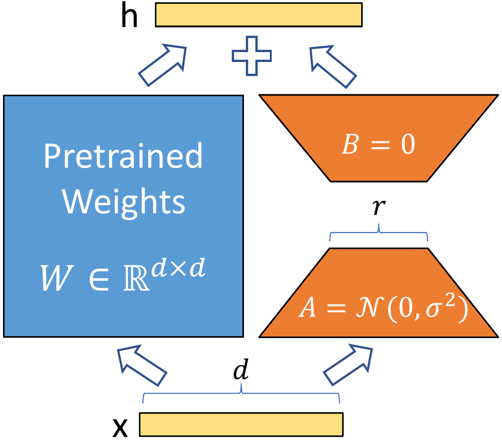

Fine-tuning without the fine-tuning bill.
How do you teach a giant model a new trick without retraining the whole thing? You know me, I do not like paying for compute twice.
Full fine-tuning a transformer is simple and brutal. You take all 110 million parameters, you update all of them, and you keep one full copy of the weights per task. Ten tasks means ten copies of the model on disk. Worse, the optimizer keeps two extra numbers per parameter (Adam momentum and variance), so training needs roughly three times the model size in GPU memory just to hold the state. And there is the quiet part nobody likes to admit: the model learns your new task and starts forgetting the old ones. That is catastrophic forgetting, and it is exactly what it sounds like.
Adapters flip the deal. Freeze the big model, bolt on tiny trainable modules, and train only those. The backbone never moves. You keep one frozen copy of the model and swap in a small adapter per task, like changing lenses on a camera instead of buying a new camera body.
The original idea (Houlsby et al.) is almost embarrassingly simple. Inside each transformer layer, after the attention block and after the feed-forward block, you insert a small two-layer MLP with a bottleneck. The hidden state is 768 numbers wide. You squeeze it down through a 64-wide hallway and expand it back. The squeeze is the whole trick: the hallway is the only thing that learns.
Here is the entire module. Down project, nonlinear, up project, add it back to the input so the frozen signal flows through untouched if the adapter does nothing:
class SimpleAdapter(nn.Module):
def __init__(self, hidden_dim, bottleneck_dim):
super().__init__()
self.down_proj = nn.Linear(hidden_dim, bottleneck_dim)
self.relu = nn.ReLU()
self.up_proj = nn.Linear(bottleneck_dim, hidden_dim)
def forward(self, x):
return x + self.up_proj(self.relu(self.down_proj(x)))
Let me count the parameters out loud, because the numbers are the point. With a hidden size of 768 and a bottleneck of 64:
Two percent. You train two percent of the model and leave the other 98 percent exactly where pretraining put it. That is why the model does not forget: the old knowledge is still sitting there, frozen, untouched.
Where do these things actually plug in? Here is one transformer block:
The big frozen blocks never change. Only the small adapters between them learn anything, so one backbone can host a different adapter per task.
And the training loop is one loop with a filter. Everything frozen except the adapters:
for name, param in model.named_parameters():
param.requires_grad = 'adapter' in name
LoRA (low-rank adaptation) asks a different question. Instead of adding new modules, look at what fine-tuning actually does to a weight matrix. You start with $W$ and you end with $W + \Delta W$. The update $\Delta W$ is a big dense matrix, but it turns out the useful part of it lives in a tiny subspace. So instead of learning the full $\Delta W$, you learn it as two skinny matrices multiplied together:
Read it term by term. $W$ is the original frozen weight, shape $d \times k$. $A$ is $r \times k$ and $B$ is $d \times r$, where the rank $r \ll d$ is tiny compared to the weight dims. Only $A$ and $B$ are trained. $W$ never moves.
This is the actual diagram from the LoRA paper. Not my redrawing, the authors' own Figure 1. The whole method is in this one picture: the blue box is the weight you already have, frozen solid, and the two orange slabs are the only thing you train. Tap the numbered markers and I will walk you through it.

Tap a numbered marker on the figure.
Figure 1. Our reparametrization. We only train $A$ and $B$. Rebuilt from Figure 1 of Hu et al., "LoRA: Low-Rank Adaptation of Large Language Models," ICLR 2022. arXiv:2106.09685
Full citation: Hu, E. J., Shen, Y., Wallis, P., Allen-Zhu, Z., Li, Y., Wang, S., Wang, L., and Chen, W. LoRA: Low-Rank Adaptation of Large Language Models. ICLR 2022. arXiv:2106.09685
Now the numbers. Take a $768 \times 768$ attention projection, rank $r = 8$:
The update is a shadow of the original weight, and a shadow is all you need.
The code wraps a frozen linear layer and adds the low-rank path alongside it:
class LoRALinear(nn.Module):
def __init__(self, linear, rank=8, alpha=16.0):
super().__init__()
self.linear = linear
self.linear.weight.requires_grad = False # W stays frozen
in_dim, out_dim = linear.in_features, linear.out_features
self.A = nn.Parameter(torch.randn(rank, in_dim) * 0.01) # (r, k)
self.B = nn.Parameter(torch.zeros(out_dim, rank)) # (d, r), zero so BA = 0 at init
self.scale = alpha / rank
def forward(self, x):
return self.linear(x) + self.scale * (x @ self.A.T @ self.B.T)
In practice you wrap the query and value projections of each attention block and leave the rest frozen. For a 12-layer, 768-wide model with $r = 8$ on query and value:
Rank is the dial that sets those numbers. Try it yourself:
The orange hallway is the only part that learns. Right now r = 8: the hallway is 8 numbers wide and this one update costs 12,288 params (see the badge under it). Drag the slider and watch it widen. At r = 64 the hallway is as tall as the input itself: a dense matrix with extra steps.
Honest labeling: these curves are illustrative, not measured runs. They follow the well-known pattern: easy classification saturates at tiny rank, harder reasoning keeps gaining with rank. Your dataset will differ; the ordering is what is stable.
Rank is a dial, not a magic number. The easy task is done at r = 4 and never looks back. The hard task keeps buying accuracy with every notch, and at r = 64 you are training as many parameters as a bottleneck adapter, which is nearly a dense matrix with extra steps. Pick the rank your task needs, not the biggest one that fits.
A quarter of one percent of the model, and it usually lands within a point of full fine-tuning on classification-style tasks. That is stupid easy and gives you a fast win.
One more thing, and it matters at serving time: $W + B \cdot A$ is just a matrix again. After training you can bake the update into $W$ permanently and the model runs exactly as fast as the original. No extra layers in the graph, no latency cost. Bottleneck adapters cannot do this (their nonlinearity blocks the merge), so they stay in the graph forever.
Adapters are already small. Compacter asks whether the adapter's own matrices can be cheaper. The trick is the Kronecker product: instead of storing a big dense matrix, you store two small factors $A$ and $B$ and let their product $A \otimes B$ stand in for it. Think of describing a tiled floor by one tile plus a repeat pattern instead of listing every tile.
The key property: each element of $A$ scales a whole copy of $B$.
You never build the big matrix; you apply it with a reshape and two small multiplications:
def kron_linear(x, A, B):
# computes x @ (A ⊗ B) without ever building A ⊗ B
# A: (m, n), B: (p, q), x: (batch, m*p) -> (batch, n*q)
X = x.view(-1, A.shape[0], B.shape[0])
return (A.T @ X @ B).reshape(x.shape[0], -1)
class CompacterAdapter(nn.Module):
def __init__(self, d_model=768, bottleneck=64, n=8):
super().__init__()
self.A = nn.Parameter(torch.randn(n, n) * 0.01) # shared factor
self.B_down = nn.Parameter(torch.randn(d_model // n, bottleneck // n) * 0.01)
self.B_up = nn.Parameter(torch.randn(bottleneck // n, d_model // n) * 0.01)
self.act = nn.ReLU()
def forward(self, x):
h = self.act(kron_linear(x, self.A, self.B_down)) # 768 -> 64
return x + kron_linear(h, self.A, self.B_up) # 64 -> 768
Sixty-one times fewer parameters for the same shaped module. The price is structure: the weight matrix is no longer fully free, it has to factor this way. In practice it holds up surprisingly well, but it is more finicky to tune than plain LoRA.
So what do you actually get? Representative numbers for sentiment classification (SST-2) on a BERT-base sized model, rounded from published adapter and LoRA runs. Treat these as the pattern, not gospel; your dataset will differ, but the ordering is stable:
Read that again: 0.27 percent of the parameters, half a point of accuracy. That is the whole pitch of this page in one table.
Adapters shrink what you train. Quantization shrinks what you store: the frozen 98 percent of the model still has to live in memory at inference time. The quantization tutorial picks up where this one ends.